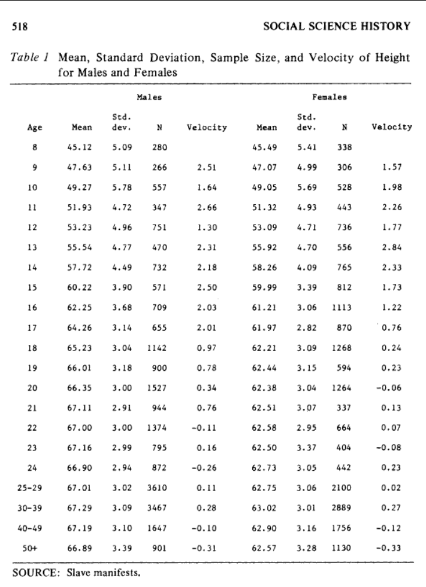
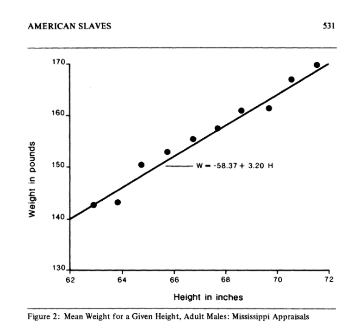

Certificates Of Freedom — Data Analysis Part 2#
Height Feature#
This field is to indicate the height of the individual freed in feet and inches.
# import libraries used for data frame (table-like) operations, and numeric data structure operations
import pandas as pd
import numpy as np
#code to import the csv saved from the previous step
df = pd.read_csv("https://raw.githubusercontent.com/cases-umd/Legacy-of-Slavery/refs/heads/master/Datasets/LoS_Clean_Output_Mod1.csv")
#code to pull the error above
df["Height"]
0 5' 3"
1 5' 3"
2 5'3"
3 5'7.75"
4 4'9.5"
...
23650 5'8.25"
23651 5'9"
23652 5'7.5"
23653 5'7"
23654 5'5"
Name: Height, Length: 23655, dtype: object
#code to pull the specific error above
df["Height"].describe()
count 22325
unique 533
top 5'4"
freq 1134
Name: Height, dtype: object
Below is a key function that coverts bad height format and feet + inches into a standardized inches format. Bad ones will be given a ‘NaN’#
#code to split the Height into feet and inches
import re
# this is a regex script which looks for a matching pattern in the input string.
# https://docs.python.org/3/library/re.html
r = re.compile(r"([0-9]+)'([0-9]*\.?[0-9]+|)")
def format_height(el):
el_new =el.replace(" ","")
m = r.match(el_new)
if m == None:
return float('NaN')
else:
return int(m.group(1))*12 + (0 if not m.group(2) else float(m.group(2)))
# Some of the records have been transcribed as mixed fractions rather than decimal values. These values have to be converted to inches using different Python formula as discussed below.
from fractions import Fraction
def format_height_type2(el):
el_new =el.replace('"',"")
el_new =el_new.split('\'')
el_new = [word for line in el_new for word in line.split()]
if not el_new:
return float('NaN')
else:
return int(el_new[0])*12 + (float(el_new[1]) + float(Fraction(el_new[2])))
# Below command starts with the beginning indentation indicating a new set of commands outside of the function, even if its in the same cell block like shown here.
# The 'apply' function applies the function definted above to the data frame's each records' Prior Status field avlue.
df["Height_Inches"] = df["Height"].astype(str).apply(lambda x: format_height_type2(x) if x.find('/') != -1 else format_height(x))
# show descriptive statistics
df["Height_Inches"].describe()
count 22320.00000
mean 64.36112
std 4.13348
min 21.50000
25% 62.00000
50% 64.50000
75% 67.00000
max 145.00000
Name: Height_Inches, dtype: float64
# show distinct height values
df["Height_Inches"].unique()
array([ 63. , 67.75 , 57.5 , 61.5 ,
66.5 , 61. , 66.25 , 66. ,
nan, 70. , 62. , 63.25 ,
63.75 , 64.5 , 65.25 , 65.75 ,
67.5 , 67. , 68. , 68.5 ,
60. , 69. , 73. , 63.5 ,
61.25 , 64. , 65. , 71. ,
65.5 , 64.75 , 59. , 62.25 ,
62.75 , 69.25 , 58. , 59.25 ,
70.5 , 62.5 , 60.5 , 64.25 ,
59.5 , 61.75 , 72. , 69.75 ,
59.75 , 60.75 , 60.125 , 61.24 ,
67.125 , 66.75 , 67.25 , 69.5 ,
68.75 , 60.25 , 61.375 , 57. ,
71.25 , 56. , 58.25 , 57.75 ,
68.25 , 71.5 , 66.6 , 64.125 ,
64.625 , 71.75 , 65.875 , 72.5 ,
70.75 , 72.25 , 56.5 , 56.75 ,
57.25 , 72.75 , 73.25 , 73.75 ,
72.375 , 73.875 , 24. , 50. ,
52. , 60.24 , 66.625 , 58.75 ,
68.125 , 47.75 , 47. , 58.125 ,
58.5 , 59.125 , 60.3 , 70.25 ,
73.5 , 74. , 75. , 61.625 ,
61.2 , 62.125 , 55.75 , 48.75 ,
64.875 , 54.5 , 48. , 46.5 ,
61.1 , 54.25 , 66.125 , 53. ,
54. , 55. , 48.5 , 51. ,
55.25 , 55.5 , 60.05 , 44.125 ,
40. , 45. , 50.5 , 51.75 ,
92.75 , 62.3 , 42. , 69.625 ,
60.625 , 65.125 , 63.125 , 75.25 ,
81.4 , 62.15 , 63.625 , 49. ,
51.5 , 68.27272727, 145. , 76. ,
69.125 , 68.875 , 36. , 41.5 ,
66.4 , 53.5 , 53.75 , 27. ,
39.25 , 64.73 , 65.34 , 58.625 ,
64.2 , 61.125 , 75.5 , 66.875 ,
46. , 69.875 , 74.25 , 63.875 ,
64.74 , 52.5 , 52.25 , 53.25 ,
54.75 , 56.25 , 57.625 , 60.875 ,
65.625 , 71.625 , 62.375 , 62.625 ,
33.5 , 38. , 39.5 , 44.5 ,
59.05 , 66.375 , 47.25 , 59.625 ,
60.275 , 60.375 , 61.875 , 74.5 ,
49.25 , 77. , 30.5 , 40.75 ,
31. , 62.675 , 75.75 , 68.33 ,
59.875 , 68.625 , 67.875 , 108.75 ,
66.2 , 63.2 , 69.2 , 69.4 ,
78.5 , 78. , 62.2 , 35. ,
41. , 43. , 44. , 26. ,
67.675 , 60.66 , 21.5 , 45.5 ,
49.75 , 65.3 , 37.5 , 65.2 ,
72.05 , 72.125 , 70.125 , 65.375 ,
63.375 , 63.74 , 34.5 , 39. ,
34. , 47.5 , 33. , 36.5 ,
26.75 , 32. , 28.5 , 30. ,
29. , 42.5 , 37. , 29.5 ,
49.5 , 40.5 , 32.5 , 31.5 ,
48.92 , 38.5 ])
A study by (Margo & Steckel, 1982), which performed an analysis of the height vs age from the EnSlaved Mainfest data of around 50000+ enslaved people shipped between 1811 and 1861 to ports like Baltimore, Richmond and other cities from the Port of Savannah. According to this study, the average heights of tallest enslaved people was around 67 inches. In the same study where another set of Enslaved People’s appraisal records showed the maximum height was found to be around 72 inches. Found below are the images from this study showing the different heights by age.


The above charts raise doubts on the unique values we observed to be higher than 80 inches and lesser than 5 inches. Thus, separating these records from the dataframe below shows the different representation of the Height during transcription.
# code to show bad records
df.loc[(df["Height_Inches"]>80)|(df["Height_Inches"]<5),['DataItem','Height','Height_Inches']]
| DataItem | Height | Height_Inches | |
|---|---|---|---|
| 5032 | 5034 | 4' 44.75" | 92.75 |
| 5625 | 5627 | 5'2 1.4" | 81.40 |
| 6197 | 6199 | 5'85." | 145.00 |
| 15694 | 15696 | 9'.75" | 108.75 |
The above values have to be manually handled by looking into the scanned documents and finding their right values as discussed below:
One of entries shown above where the height was mentioned as 4 feet 44.75 inches belonged to the enslaved person Milly Farmer c477-2, page 200, upon looking at the scanned document it was really captured as 4 feet 11.75 inches as found below from the document:
Also, it should be noted that there is record which was entered with a height of 9’.75” which clearly seems like an impossible value. This had to be handled by attempting to manually look at the Certificate of Freedom record from the scanned documents. Upon analyzing we found that there was no CoF scanned document found for this person (Cof ID: 15696). It mentions that under note that this person was manumitted but we could not find the documents under Manumitted records as well. Hence, the height record was changed as NaN for this record.
# Code to show bad records
df.loc[(df["Height_Inches"].isna())&(df["Height"].notna()),["DataItem","Height"]]
| DataItem | Height | |
|---|---|---|
| 7859 | 7861 | 5 5" |
| 11492 | 11494 | illegible |
| 12837 | 12839 | 5" |
| 15175 | 15177 | 5" |
| 16964 | 16966 | 5"1" |
Other data capture issues were corrected by looking at the original scanned CoF as shown below: the height was noted as 5 5” which was in fact 5” 5’ - 5 feet 5 inches
From above code result, we identify that there are some invalid representations of the height where the transcribers did not follow the procedures to enter single quotes for Feet and double quotes for inches. These have to be manually handled as well.
#code to manually update the issues identified above with the corrected value in inches
# We directly use the dataitem id as shown above to update the records.
df["Height_Inches"]
df.loc[(df["DataItem"]==5034), "Height_Inches"] =59.75
df.loc[(df["DataItem"]==5627), "Height_Inches"] =63.40
df.loc[(df["DataItem"]==6199), "Height_Inches"] =None
df.loc[(df["DataItem"]==15696), "Height_Inches"] =None
df.loc[(df["DataItem"]==7861), "Height_Inches"] =65.00
df.loc[(df["DataItem"]==11494), "Height_Inches"] =None
df.loc[(df["DataItem"]==12839), "Height_Inches"] =60.00
df.loc[(df["DataItem"]==15177), "Height_Inches"] =60.00
df.loc[(df["DataItem"]==16966), "Height_Inches"] =61.00
# show height values that are outliers and invalid values
df.loc[(df["Height_Inches"]>80)|(df["Height_Inches"]<5),['DataItem','Height','Height_Inches']]
df.loc[(df["Height_Inches"].isna())&(df["Height"].notna()),["DataItem","Height","Height_Inches"]]
| DataItem | Height | Height_Inches | |
|---|---|---|---|
| 6197 | 6199 | 5'85." | NaN |
| 11492 | 11494 | illegible | NaN |
| 15694 | 15696 | 9'.75" | NaN |
As could be seen, wherever possible, the team went through the scanned documents for the erroneous entries and updated the conversions ourselves. For these erroneous data, MSA would be contacted to fix the Source of Record.
Age feature#
Age field was originally in the text type format, converted to number, and converted all the decimals which was entered as it is from the original document listed as months into a 12 month per year relative decimal value, for example, the original CoF noted the enslaved person as 18 months old, the dataset had this value as 0.18 under the age column which actually should be 1.5 years old.
Below is a key function that converts bad decimal values transcrbed into a good decimal fraction of a year. For example, 0.18 was transcribed for 18 months, this was converted to 1.5 years.#
# code to pull the above
import math
from fractions import Fraction
def format_fraction_age(x):
fractional, whole = math.modf(x)
# Some of the records have been transcribed as bad fractions, this will fix it as a good fraction of a year
return float(fractional*100/12)
# The 'apply' function applies the function definted above to the data frame's each records' Age field value.
df["AgeFormatted"] = df["Age"].apply(lambda x: float(x) if x >= 1 else format_fraction_age(x))
# import shlex
# code to find the converted Age records
df.loc[(df["Age"]<1),['DataItem','Age','AgeFormatted']]
| DataItem | Age | AgeFormatted | |
|---|---|---|---|
| 11876 | 11878 | 0.08 | 0.666667 |
| 13870 | 13872 | 0.18 | 1.500000 |
| 19625 | 19627 | 0.80 | 6.666667 |
| 22819 | 22822 | 0.09 | 0.750000 |
| 22849 | 22852 | 0.18 | 1.500000 |
| 22861 | 22864 | 0.03 | 0.250000 |
| 22890 | 22893 | 0.08 | 0.666667 |
| 22907 | 22910 | 0.03 | 0.250000 |
| 22912 | 22915 | 0.18 | 1.500000 |
| 22940 | 22943 | 0.06 | 0.500000 |
| 22969 | 22972 | 0.07 | 0.583333 |
| 22979 | 22982 | 0.06 | 0.500000 |
| 23038 | 23041 | 0.05 | 0.416667 |
| 23059 | 23062 | 0.18 | 1.500000 |
| 23118 | 23121 | 0.03 | 0.250000 |
| 23126 | 23129 | 0.07 | 0.583333 |
| 23154 | 23157 | 0.06 | 0.500000 |
| 23171 | 23174 | 0.04 | 0.333333 |
| 23269 | 23272 | 0.06 | 0.500000 |
For one case which was listed to be as 100 years old, upon checking the CoF original document, it’s unclear as the document shows something like eighty & twenty years as highlighted below: This is also noted in the notes section as “Age given as eighty and twenty years. Could potentially be 28 years, not 100.”
# save the output file
# save the output to the csv
dfo = pd.DataFrame(df)
dfo.to_csv('https://raw.githubusercontent.com/cases-umd/Legacy-of-Slavery/refs/heads/master/Datasets/LoS_Clean_Output_Mod2.csv', index=False)
Notebooks#
The below module is organized into a sequential set of Python Notebooks that allows to interact with the Legacy of Slavery’s Certificates of Freedom collection by exploring, cleaning, preparing, visualizing and analysing it from historical context perspective.
Certificates Of Freedom: Context Based Data Visualization (If you get a 500 Internal Server Error, please refresh the browser to render this module again)
Click here to go the Next Module (If you get a 500 Internal Server Error, please refresh the browser to render this module again)